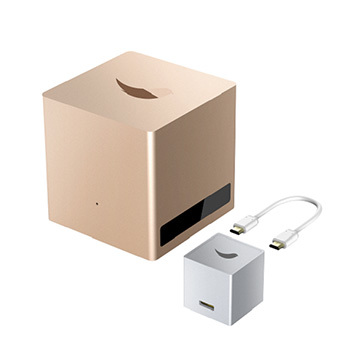

REVIEW: Leeo Smart Alert Nightlight
★★★★☆
March 2, 20154

1. Our view:
Definely this product is a well design product in terms of outlook. The feel is it's a little cute gifts for young couple moving to a new home. Personally it seems to be a competitive product against apple tv, xiaomi etc...
The manufacturer claim the sparo can serve entertainment and work but we feel that there are too little support for gaming and CPU power may be a problem for work more then simple office.
Definely this product is a well design product in terms of outlook. The feel is it's a little cute gifts for young couple moving to a new home. Personally it seems to be a competitive product against apple tv, xiaomi etc...
The manufacturer claim the sparo can serve entertainment and work but we feel that there are too little support for gaming and CPU power may be a problem for work more then simple office.
2. Possible scenario:
Home theater as a computer, manufacture claims to work with a app but after testing seems difficult.
We suggest the product to be used in front desk of company for the receptions to do some simple online browsing or office documentation.
For work, it seems possible but surely not possible for 3D modeling or gaming.
Home theater as a computer, manufacture claims to work with a app but after testing seems difficult.
We suggest the product to be used in front desk of company for the receptions to do some simple online browsing or office documentation.
For work, it seems possible but surely not possible for 3D modeling or gaming.
3. Tests
We tested it on a 3D printing software named cura. The machine seems possible for simple operation. The window system
Tag: window 10, PC, home theater, Living room, office
Price: 1000
We tested it on a 3D printing software named cura. The machine seems possible for simple operation. The window system
Tag: window 10, PC, home theater, Living room, office
Price: 1000